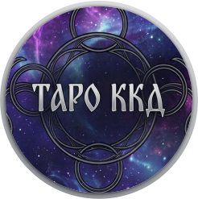

Выберите тип расклада:
Название расклада
Включить камеру и сканировать
Назад к выбору
Наведите камеру на карту...
Карта успешно считана!
Сканировать следующую карту
Отмена
Результаты расклада
🔮 Получить онлайн-гадание
✨ Послание Карт и Толкование
Новый расклад